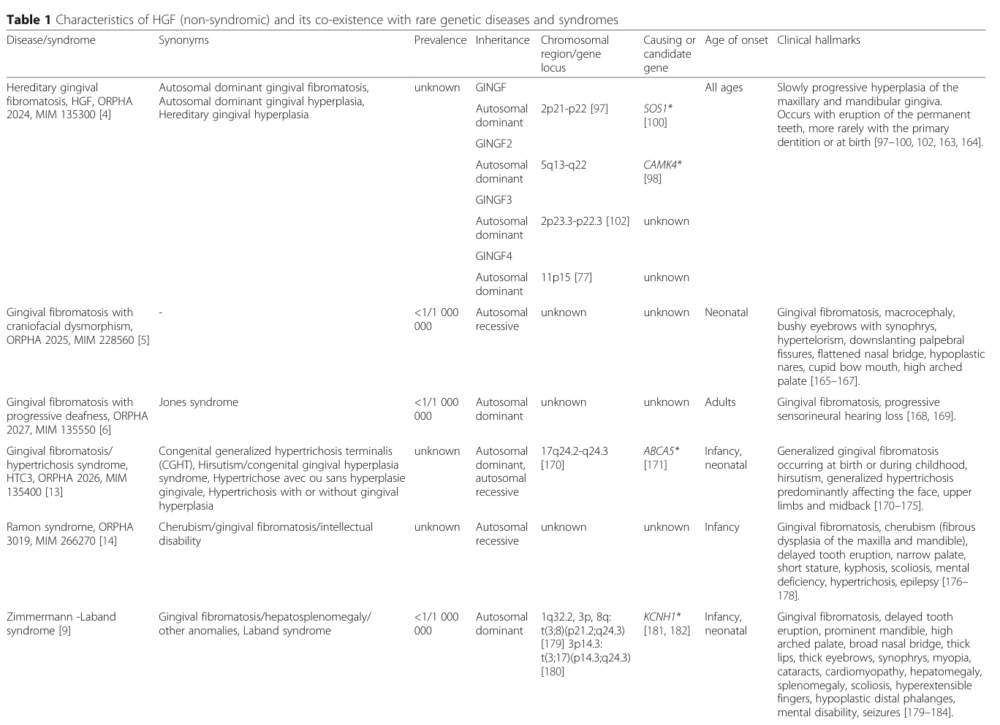

Hereditary gingival fibromatosis (HGF) is a rare, genetically heterogeneous, benign and slowly progressive non-hemorrhagic fibrous enlargement of the maxillary and mandibular gingivae. Onset is usually at eruption of the primary or permanent dentition (occasionally at birth), and overgrowth may be localized or generalized, covering the crowns of teeth and producing delayed tooth eruption, tooth malposition, diastemas, and difficulties with speech and mastication. The defining lesion is excessive collagen (type I) deposition in the gingival connective tissue by hyperactive gingival fibroblasts, with relatively little inflammation. Most cases are non-syndromic and autosomal dominant; the disorder is genetically heterogeneous, with the SOS1 gene (chromosome 2p21-p22, HGF1/GINGF1 locus) being the first and best-characterized cause, and additional genes (REST, ZNF862) and loci (GINGF2-GINGF4) implicated. Less commonly HGF is autosomal recessive or part of a syndrome. Drug-induced gingival overgrowth (phenytoin, ciclosporin, calcium-channel blockers) is a key acquired differential diagnosis.
Ask a research question about Hereditary Gingival Fibromatosis. OpenScientist will conduct autonomous deep research using the Disorder Mechanisms Knowledge Base and PubMed literature (typically 10-30 minutes).
Do not include personal health information in your question. Questions and results are cached in your browser's local storage.
name: Hereditary Gingival Fibromatosis
creation_date: "2026-06-15T00:00:00Z"
category: Mendelian
disease_term:
preferred_term: hereditary gingival fibromatosis
term:
id: MONDO:0016070
label: hereditary gingival fibromatosis
description: >
Hereditary gingival fibromatosis (HGF) is a rare, genetically heterogeneous,
benign and slowly progressive non-hemorrhagic fibrous enlargement of the
maxillary and mandibular gingivae. Onset is usually at eruption of the primary
or permanent dentition (occasionally at birth), and overgrowth may be localized
or generalized, covering the crowns of teeth and producing delayed tooth
eruption, tooth malposition, diastemas, and difficulties with speech and
mastication. The defining lesion is excessive collagen (type I) deposition in
the gingival connective tissue by hyperactive gingival fibroblasts, with
relatively little inflammation. Most cases are non-syndromic and autosomal
dominant; the disorder is genetically heterogeneous, with the SOS1 gene
(chromosome 2p21-p22, HGF1/GINGF1 locus) being the first and best-characterized
cause, and additional genes (REST, ZNF862) and loci (GINGF2-GINGF4) implicated.
Less commonly HGF is autosomal recessive or part of a syndrome. Drug-induced
gingival overgrowth (phenytoin, ciclosporin, calcium-channel blockers) is a key
acquired differential diagnosis.
inheritance:
- name: Autosomal dominant inheritance
inheritance_term:
preferred_term: Autosomal dominant inheritance
term:
id: HP:0000006
label: Autosomal dominant inheritance
description: >
Most non-syndromic HGF segregates as an autosomal dominant trait with high
penetrance; the prototypic SOS1 single-cytosine insertion (HGF1) segregated
dominantly over four generations.
evidence:
- reference: PMID:11868160
supports: SUPPORT
evidence_source: HUMAN_CLINICAL
snippet: "This insertion mutation, which segregates in a dominant manner over four generations, introduces a frameshift and creates a premature stop codon"
explanation: >
Documents autosomal dominant segregation of the SOS1 HGF1 mutation across
a multigenerational family.
- name: Autosomal recessive inheritance
inheritance_term:
preferred_term: Autosomal recessive inheritance
term:
id: HP:0000007
label: Autosomal recessive inheritance
description: >
A minority of HGF families show autosomal recessive inheritance, more often
when gingival overgrowth co-occurs as part of a syndrome.
evidence:
- reference: PMID:35665929
supports: SUPPORT
evidence_source: HUMAN_CLINICAL
snippet: "HGF occurs in approximately 1:750,000 individuals and can exhibit dominant or recessive inheritance."
explanation: >
Confirms that HGF can follow either a dominant or recessive inheritance
pattern.
has_subtypes:
- name: HGF1
display_name: HGF type 1 (SOS1-related, GINGF1 locus, 2p21-p22)
description: >
Autosomal dominant non-syndromic HGF caused by a heterozygous frameshift
mutation in SOS1 (Son of Sevenless-1) at the GINGF1 locus on chromosome
2p21-p22. A single-cytosine insertion in codon 1083 truncates the protein,
removing the C-terminal proline-rich SH3-binding domains and generating a
constitutively active RAS-MAPK signaling output in gingival fibroblasts.
evidence:
- reference: PMID:11868160
supports: SUPPORT
evidence_source: HUMAN_CLINICAL
snippet: "Sequencing of these genes, in affected and unaffected HGF1 family members, identified a mutation in the Son of sevenless-1 (SOS1) gene in affected individuals."
explanation: >
Establishes SOS1 as the HGF1 disease gene at the 2p21-p22 locus.
- name: ZNF862-related
display_name: ZNF862-related HGF
description: >
Autosomal dominant non-syndromic HGF caused by a heterozygous missense
mutation (c.2812G>A) in the zinc finger protein 862 gene (ZNF862),
identified in a four-generation Chinese family, acting through increased
profibrotic COL1A1 synthesis.
evidence:
- reference: PMID:35142290
supports: SUPPORT
evidence_source: HUMAN_CLINICAL
snippet: "A novel heterozygous missense mutation (c.2812G > A) in zinc finger protein 862 gene (ZNF862) was identified"
explanation: >
Identifies ZNF862 as a causative HGF gene in an autosomal dominant family.
- name: REST-related
display_name: REST-related HGF (GINGF5 locus, 4q12)
description: >
Autosomal dominant non-syndromic HGF caused by heterozygous final-exon
truncating mutations in REST (RE1-silencing transcription factor) at the
GINGF5 locus on chromosome 4q12. REST is a transcriptional repressor, and
the truncating alleles are thought to act through altered repressor activity
rather than simple haploinsufficiency.
evidence:
- reference: PMID:28686854
supports: SUPPORT
evidence_source: HUMAN_CLINICAL
snippet: "RE1-silencing transcription factor (REST) in the probands from all families"
explanation: >
Primary report identifying REST final-exon truncating mutations as a cause
of HGF.
- name: ZNF513/KIF3C digenic
display_name: ZNF513 + KIF3C digenic HGF (GINGF3 locus, 2p22.3-p23.3)
description: >
HGF caused by combined (digenic) double-heterozygous pathogenic mutations in
ZNF513 (c.C748T, p.R250W) and KIF3C (c.G1229A, p.R410H) within the GINGF3
locus. In a knock-in mouse model, each single mutation alone does not produce
the gingival fibromatosis phenotype, whereas the double mutation does,
consistent with a digenic requirement.
evidence:
- reference: PMID:37752101
supports: SUPPORT
evidence_source: HUMAN_CLINICAL
snippet: "identified double heterozygous pathogenic mutations in the ZNF513 (c.C748T, p.R250W) and KIF3C (c.G1229A, p.R410H) genes within the GINGF3 locus related to"
explanation: >
Identifies the digenic ZNF513 + KIF3C cause of HGF at the GINGF3 locus.
- name: Locus-defined (GINGF2, GINGF4)
display_name: Locus-defined HGF (GINGF2 5q13-q22, GINGF4 11p15)
description: >
Additional autosomal dominant non-syndromic HGF families map to loci for
which the causative gene is not firmly established: GINGF2 (5q13-q22) and
GINGF4 (11p15). These reflect the locus heterogeneity of HGF beyond the
cloned genes.
evidence:
- reference: PMID:35665929
supports: SUPPORT
evidence_source: HUMAN_CLINICAL
snippet: "To date, five loci (2p21-p22, 2p22.3-p23.3, 4q12, 5q13-q22, and 11p15) and three genes"
explanation: >
Documents the full set of mapped HGF loci establishing genetic
heterogeneity.
pathophysiology:
- name: Gingival Fibroblast Hyperactivity and Collagen Overproduction
description: >
The central lesion of HGF is overproduction and accumulation of type I
collagen and other extracellular matrix macromolecules by hyperactive
gingival fibroblasts, producing dense, relatively acellular fibrous
connective tissue. Affected gingiva shows increased fibroblast numbers and
increased collagen content, and HGF fibroblasts proliferate faster in
culture.
cell_types:
- preferred_term: Gingival fibroblast
term:
id: CL:0000057
label: fibroblast
biological_processes:
- preferred_term: Collagen biosynthetic process
term:
id: GO:0032964
label: collagen biosynthetic process
modifier: INCREASED
- preferred_term: Extracellular matrix organization
term:
id: GO:0030198
label: extracellular matrix organization
modifier: DYSREGULATED
- preferred_term: Fibroblast proliferation
term:
id: GO:0048144
label: fibroblast proliferation
modifier: INCREASED
evidence:
- reference: PMID:17062749
supports: SUPPORT
evidence_source: IN_VITRO
snippet: "Histological assessment of HGF gingiva indicated increased numbers of fibroblasts (30%) and increased collagen (10%). Cell proliferation studies demonstrated increased growth rates"
explanation: >
Demonstrates increased fibroblast numbers, collagen, and proliferation in
SOS1-mutant HGF gingiva and fibroblasts.
- reference: PMID:35142290
supports: SUPPORT
evidence_source: IN_VITRO
snippet: "The functional study supports a biological role of ZNF862 for increasing the profibrotic factors particularly COL1A1 synthesis and hence resulting in HGF."
explanation: >
Links the ZNF862 mutation to increased COL1A1 (type I collagen) synthesis.
downstream:
- target: Gingival fibromatosis
causal_link_type: DIRECT
description: >
Collagen-rich fibrous connective-tissue accumulation produces the defining
gingival fibromatosis lesion.
evidence:
- reference: PMID:35665929
supports: SUPPORT
evidence_source: HUMAN_CLINICAL
snippet: "characterized by slow but progressive fibrous, non-hemorrhagic, and painless growth of the gingival tissues due to the increased deposition of collagen"
explanation: >
The review directly links progressive gingival fibromatosis to increased
collagen deposition.
- target: Gingival overgrowth
causal_link_type: DIRECT
description: >
Fibrotic expansion of gingival connective tissue causes progressive
gingival enlargement.
evidence:
- reference: PMID:31130610
supports: SUPPORT
evidence_source: HUMAN_CLINICAL
snippet: "a disorder characterized by progressive enlargement of the gingiva. This enlargement results from an increase in the connective tissue elements of the submucosa"
explanation: >
This clinical report links gingival enlargement to expanded connective
tissue elements.
- target: Tooth malposition
causal_link_type: INDIRECT_KNOWN_INTERMEDIATES
intermediate_mechanisms:
- fibrous gingival overgrowth covering tooth crowns
- deformation of the dental arch
description: >
Expanding fibrous gingiva can cover tooth crowns and mechanically displace
teeth.
evidence:
- reference: PMID:28425619
supports: SUPPORT
evidence_source: HUMAN_CLINICAL
snippet: "the overgrowth can cover entire crowns of the teeth, thus resulting in prolonged retention of primary dentition, diastemas or malposition of teeth"
explanation: >
The full-text review section describes malposition as a direct
consequence of gingival overgrowth covering tooth crowns.
- target: Delayed eruption of teeth
causal_link_type: INDIRECT_KNOWN_INTERMEDIATES
intermediate_mechanisms:
- fibrous gingival overgrowth covering tooth crowns
description: >
Gingival overgrowth can mechanically impede eruption and prolong retention
of primary dentition.
evidence:
- reference: PMID:28425619
supports: SUPPORT
evidence_source: HUMAN_CLINICAL
snippet: "the overgrowth can cover entire crowns of the teeth, thus resulting in prolonged retention of primary dentition"
explanation: >
Crown-covering gingival overgrowth explains delayed or impeded tooth
eruption.
- target: Feeding and speech difficulties
causal_link_type: INDIRECT_KNOWN_INTERMEDIATES
intermediate_mechanisms:
- palatal deformity from severe gingival overgrowth
- impaired deglutition and phonation
description: >
Severe fibrous gingival enlargement can deform the palate and impair
swallowing and speech.
evidence:
- reference: PMID:31130610
supports: SUPPORT
evidence_source: HUMAN_CLINICAL
snippet: "causing deformity of the palate and impairing phonation and deglutition, even reaching the midline"
explanation: >
This report directly connects severe gingival enlargement with impaired
phonation and deglutition.
- name: Constitutive RAS-MAPK Signaling in Gingival Fibroblasts
description: >
The HGF1 SOS1 frameshift removes the C-terminal autoinhibitory proline-rich
SH3-binding domains of the SOS1 guanine-nucleotide exchange factor, yielding
a truncated protein that drives constitutive RAS activation and downstream
MAPK signaling, promoting fibroblast proliferation and a profibrotic
phenotype. A KCNQ1-driven feedback amplifies Ras clustering/activation and
MAPK/AP-1 output in HGF fibroblasts.
cell_types:
- preferred_term: Gingival fibroblast
term:
id: CL:0000057
label: fibroblast
biological_processes:
- preferred_term: Ras protein signal transduction
term:
id: GO:0007265
label: Ras protein signal transduction
modifier: INCREASED
- preferred_term: MAPK cascade
term:
id: GO:0000165
label: MAPK cascade
modifier: INCREASED
- preferred_term: PI3K/AKT signaling
term:
id: GO:0043491
label: phosphatidylinositol 3-kinase/protein kinase B signal transduction
modifier: INCREASED
evidence:
- reference: PMID:11868160
supports: SUPPORT
evidence_source: HUMAN_CLINICAL
snippet: "introduces a frameshift and creates a premature stop codon, abolishing four functionally important proline-rich SH3 binding domains normally present in the carboxyl-terminal region of the SOS1 protein"
explanation: >
The SOS1 truncation removes autoinhibitory SH3-binding domains of this
RAS exchange factor, the molecular basis for dysregulated RAS signaling.
- reference: PMID:33381870
supports: SUPPORT
evidence_source: IN_VITRO
snippet: "ML277 generated lateral clustering and activation of Ras on plasma membrane, followed by augmented MAPK/AP-1 signaling pathway output."
explanation: >
Demonstrates a KCNQ1-channel-driven Ras/MAPK activation pathway promoting
the fibrogenic response in HGF gingival fibroblasts.
- reference: PMID:37752101
supports: SUPPORT
evidence_source: IN_VITRO
snippet: "proliferation, migration, and fibrosis response via the PI3K/AKT/mTOR and Ras/Raf/MEK/ERK pathways"
explanation: >
Shows the digenic ZNF513/KIF3C lesion drives gingival fibroblast
proliferation and fibrosis through PI3K/AKT/mTOR and Ras/MAPK signaling.
downstream:
- target: Gingival Fibroblast Hyperactivity and Collagen Overproduction
description: >-
Constitutive SOS1/RAS-MAPK and PI3K/AKT activation drives fibroblast
proliferation and a profibrotic phenotype, directly fueling collagen
overproduction and ECM accumulation in gingival tissue.
- name: Profibrotic Cytokine Signaling and Matrix-Remodeling Imbalance
description: >
HGF gingival fibroblasts show elevated TGF-beta1 and connective tissue
growth factor (CTGF) signaling and increased HSP47 (a collagen-specific
chaperone), together with a shift in the TIMP-1/MMP-1 ratio toward reduced
matrix degradation. The combination of increased collagen synthesis and
decreased matrix turnover drives net fibrotic accumulation.
cell_types:
- preferred_term: Gingival fibroblast
term:
id: CL:0000057
label: fibroblast
biological_processes:
- preferred_term: Transforming growth factor beta receptor signaling pathway
term:
id: GO:0007179
label: transforming growth factor beta receptor signaling pathway
modifier: INCREASED
- preferred_term: Collagen fibril organization
term:
id: GO:0030199
label: collagen fibril organization
modifier: DYSREGULATED
evidence:
- reference: PMID:29989318
supports: SUPPORT
evidence_source: IN_VITRO
snippet: "The synthesis of collagen I, HSP47, TGF-β1, CTGF and TIMP-1 was significantly elevated in HGF gingival fibroblasts compared with controls, while the production of MMP-1 was decreased."
explanation: >
Documents the profibrotic cytokine/chaperone upregulation and the
TIMP-1/MMP-1 imbalance driving collagen I overproduction in HGF.
downstream:
- target: Gingival Fibroblast Hyperactivity and Collagen Overproduction
description: >-
TGF-beta1/CTGF signaling and the TIMP-1/MMP-1 imbalance amplify collagen
synthesis while reducing matrix degradation, converging on net fibrotic
accumulation in gingival fibroblasts.
- name: Oxidative Stress and Epithelial-Mesenchymal Transition
description: >
HGF gingival fibroblasts exhibit metabolic alterations including increased
lipid peroxidation and reduced antioxidant CoQ10, and oxidant exposure
increases collagen production in vitro. Histology shows basal lamina
disruption with epithelial cells migrating into connective tissue,
consistent with an epithelial-mesenchymal-transition contribution to the
fibroblast pool.
cell_types:
- preferred_term: Gingival fibroblast
term:
id: CL:0000057
label: fibroblast
biological_processes:
- preferred_term: Response to oxidative stress
term:
id: GO:0006979
label: response to oxidative stress
modifier: INCREASED
- preferred_term: Epithelial to mesenchymal transition
term:
id: GO:0001837
label: epithelial to mesenchymal transition
modifier: ABNORMAL
evidence:
- reference: PMID:31130610
supports: SUPPORT
evidence_source: IN_VITRO
snippet: "The results of the biochemical analysis showed increased collagen synthesis, reduced antioxidant CoQ10 content, and high levels of lipid peroxidation."
explanation: >
Documents oxidative-stress metabolic alterations in HGF fibroblasts that
promote collagen production.
- reference: PMID:31130610
supports: SUPPORT
evidence_source: HUMAN_CLINICAL
snippet: "A histological study revealed dense fibrous tissue, basal lamina disruption, and epithelial cell migration into the connective tissue."
explanation: >
Histological evidence of basal lamina disruption and epithelial migration
consistent with EMT in HGF gingiva.
downstream:
- target: Gingival Fibroblast Hyperactivity and Collagen Overproduction
description: >-
Oxidative stress increases collagen synthesis in gingival fibroblasts,
while EMT expands the local fibroblast pool, together amplifying the
fibrotic output.
- name: miR-335-3p Loss and Convergent Profibrotic Network Derepression
description: >
miR-335-3p is downregulated in HGF gingival fibroblasts and in TGF-beta-
stimulated normal gingival fibroblasts. This microRNA directly targets and
represses several core profibrotic hubs - SOS1 (the HGF1/RAS-MAPK driver),
SMAD2/3 (TGF-beta signaling), and CTNNB1 (Wnt/beta-catenin) - so its loss
derepresses the convergent profibrotic program. Restoring miR-335-3p
attenuates, and knocking it down promotes, the fibrogenic activity of human
gingival fibroblasts, nominating it as a candidate antifibrotic target.
cell_types:
- preferred_term: Gingival fibroblast
term:
id: CL:0000057
label: fibroblast
biological_processes:
- preferred_term: Transforming growth factor beta receptor signaling pathway
term:
id: GO:0007179
label: transforming growth factor beta receptor signaling pathway
modifier: INCREASED
- preferred_term: Fibroblast proliferation
term:
id: GO:0048144
label: fibroblast proliferation
modifier: INCREASED
evidence:
- reference: PMID:31323181
supports: SUPPORT
evidence_source: IN_VITRO
snippet: "miR-335-3p directly targeted SOS1, SMAD2/3, and CTNNB1 by canonical and noncanonical base paring"
explanation: >
Identifies miR-335-3p as a regulator that represses the SOS1, SMAD2/3, and
CTNNB1 profibrotic hubs converging in HGF gingival fibroblasts.
- reference: PMID:31323181
supports: SUPPORT
evidence_source: IN_VITRO
snippet: "Ectopic miR-335-3p attenuated, whereas knockdown of miR-335-3p promoted, the fibrogenic activity of human gingival fibroblasts"
explanation: >
Demonstrates that miR-335-3p loss promotes, and restoration attenuates, the
fibrogenic activity of gingival fibroblasts.
downstream:
- target: Constitutive RAS-MAPK Signaling in Gingival Fibroblasts
description: >-
miR-335-3p directly represses SOS1; its loss derepresses the RAS-MAPK
axis, amplifying constitutive RAS activation in gingival fibroblasts.
- target: Profibrotic Cytokine Signaling and Matrix-Remodeling Imbalance
description: >-
miR-335-3p directly targets SMAD2/3 (TGF-beta downstream effectors); its
loss derepresses TGF-beta/CTGF profibrotic cytokine signaling.
phenotypes:
- category: Oral
name: Gingival fibromatosis
description: >
Generalized or localized fibrous overgrowth of the maxillary and mandibular
gingivae, the defining feature of HGF.
phenotype_term:
preferred_term: Gingival fibromatosis
term:
id: HP:0000169
label: Gingival fibromatosis
clinical_course: PROGRESSIVE
frequency: VERY_FREQUENT
evidence:
- reference: PMID:35665929
supports: SUPPORT
evidence_source: HUMAN_CLINICAL
snippet: "characterized by slow but progressive fibrous, non-hemorrhagic, and painless growth of the gingival tissues due to the increased deposition of collagen"
explanation: >
Describes the defining progressive fibrous gingival overgrowth of HGF.
- category: Oral
name: Gingival overgrowth
description: >
Enlargement of gingival tissue that can cover the crowns of teeth and deform
the dental arch.
phenotype_term:
preferred_term: Gingival overgrowth
term:
id: HP:0000212
label: Gingival overgrowth
frequency: VERY_FREQUENT
evidence:
- reference: PMID:31130610
supports: SUPPORT
evidence_source: HUMAN_CLINICAL
snippet: "a disorder characterized by progressive enlargement of the gingiva. This enlargement results from an increase in the connective tissue elements of the submucosa"
explanation: >
Documents progressive gingival enlargement from connective tissue
expansion.
- category: Oral
name: Tooth malposition
description: >
Displacement and malposition of teeth, including diastemas and crowding,
resulting from the expanding fibrous gingival mass.
phenotype_term:
preferred_term: Tooth malposition
term:
id: HP:0000692
label: Tooth malposition
frequency: FREQUENT
evidence:
- reference: PMID:28425619
supports: SUPPORT
evidence_source: HUMAN_CLINICAL
snippet: "the overgrowth can cover entire crowns of the teeth, thus resulting in prolonged retention of primary dentition, diastemas or malposition of teeth"
explanation: >
Documents tooth malposition and diastemas caused by gingival overgrowth.
- category: Oral
name: Delayed eruption of teeth
description: >
Mechanical impedance of tooth eruption by the fibrous gingival mass, with
prolonged retention of primary dentition.
phenotype_term:
preferred_term: Delayed eruption of teeth
term:
id: HP:0000684
label: Delayed eruption of teeth
frequency: FREQUENT
evidence:
- reference: PMID:28425619
supports: SUPPORT
evidence_source: HUMAN_CLINICAL
snippet: "the overgrowth can cover entire crowns of the teeth, thus resulting in prolonged retention of primary dentition"
explanation: >
Prolonged retention of primary dentition reflects delayed/impeded tooth
eruption due to the fibrous overgrowth.
- category: Constitutional
name: Feeding and speech difficulties
description: >
Severe gingival overgrowth can impair mastication and phonation, sometimes
with palatal deformity extending to the midline.
phenotype_term:
preferred_term: Feeding difficulties
term:
id: HP:0011968
label: Feeding difficulties
evidence:
- reference: PMID:31130610
supports: SUPPORT
evidence_source: HUMAN_CLINICAL
snippet: "causing deformity of the palate and impairing phonation and deglutition, even reaching the midline"
explanation: >
Documents impaired deglutition (feeding) and phonation in severe HGF.
biochemical:
- name: Type I collagen overproduction
notes: >
HGF gingival fibroblasts overproduce type I collagen, the biochemical
hallmark of the disorder, accompanied by elevated HSP47 collagen chaperone.
evidence:
- reference: PMID:29989318
supports: SUPPORT
evidence_source: IN_VITRO
snippet: "excessive production of collagen I was associated with increased synthesis of HSP47, TGF-β1 and CTGF by HGF gingival fibroblasts"
explanation: >
Documents collagen I overproduction with associated HSP47/TGF-beta1/CTGF
upregulation.
genetic:
- name: SOS1
gene_term:
preferred_term: SOS1
term:
id: hgnc:11187
label: SOS1
association: Causative
subtype: HGF1
notes: >
Heterozygous frameshift insertion (single cytosine in codon 1083) at the
GINGF1 locus (2p21-p22); the first identified and best-characterized cause of
non-syndromic autosomal dominant HGF (type 1).
evidence:
- reference: PMID:11868160
supports: SUPPORT
evidence_source: HUMAN_CLINICAL
snippet: "insertion of a cytosine between nucleotides 126,142 and 126,143 in codon 1083 of the SOS1 gene is responsible for HGF1"
explanation: >
Identifies the causative SOS1 insertion mutation for HGF1.
- name: ZNF862
gene_term:
preferred_term: ZNF862
term:
id: hgnc:34519
label: ZNF862
association: Causative
subtype: ZNF862-related
notes: >
Heterozygous missense mutation (c.2812G>A) identified in an autosomal
dominant Chinese HGF family; functions by increasing profibrotic COL1A1
synthesis.
evidence:
- reference: PMID:35142290
supports: SUPPORT
evidence_source: HUMAN_CLINICAL
snippet: "A novel heterozygous missense mutation (c.2812G > A) in zinc finger protein 862 gene (ZNF862) was identified, and it is absent among the population as per the Genome Aggregation Database."
explanation: >
Identifies the causative ZNF862 missense mutation in HGF.
- name: REST
gene_term:
preferred_term: REST
term:
id: hgnc:9966
label: REST
association: Causative
subtype: REST-related
notes: >
RE1-silencing transcription factor (GINGF5 locus, 4q12); heterozygous
final-exon truncating variants (frameshift and nonsense) cause autosomal
dominant HGF, identified by whole-exome sequencing across multiple families.
evidence:
- reference: PMID:28686854
supports: SUPPORT
evidence_source: HUMAN_CLINICAL
snippet: "RE1-silencing transcription factor (REST) in the probands from all families"
explanation: >
Primary report identifying causative REST truncating mutations in HGF
families.
- reference: PMID:28686854
supports: SUPPORT
evidence_source: HUMAN_CLINICAL
snippet: "REST is a transcriptional repressor that is expressed throughout the body"
explanation: >
Establishes REST as a transcriptional repressor, the basis for the
proposed altered-repressor disease mechanism.
- name: ZNF513
gene_term:
preferred_term: ZNF513
term:
id: hgnc:26498
label: ZNF513
association: Causative (digenic with KIF3C)
subtype: ZNF513/KIF3C digenic
notes: >
Transcription factor at the GINGF3 locus; the pathogenic ZNF513 c.C748T
(p.R250W) variant requires a co-occurring KIF3C variant to produce HGF.
ZNF513 binds KIF3C exon 1 and positively regulates KIF3C expression in
gingival fibroblasts.
evidence:
- reference: PMID:37752101
supports: SUPPORT
evidence_source: HUMAN_CLINICAL
snippet: "identified double heterozygous pathogenic mutations in the ZNF513 (c.C748T, p.R250W) and KIF3C (c.G1229A, p.R410H) genes within the GINGF3 locus related to"
explanation: >
Identifies ZNF513 as one of the two digenic HGF genes at the GINGF3 locus.
- reference: PMID:37752101
supports: SUPPORT
evidence_source: IN_VITRO
snippet: "ZNF513, a transcription factor, binds to KIF3C exon 1 and participates"
explanation: >
Demonstrates the regulatory relationship between ZNF513 and KIF3C in
gingival fibroblasts.
- name: KIF3C
gene_term:
preferred_term: KIF3C
term:
id: hgnc:6321
label: KIF3C
association: Causative (digenic with ZNF513)
subtype: ZNF513/KIF3C digenic
notes: >
Kinesin family member at the GINGF3 locus; the pathogenic KIF3C c.G1229A
(p.R410H) variant, in combination with the ZNF513 variant, drives gingival
fibroblast proliferation and fibrosis via PI3K/AKT/mTOR and Ras/MAPK
signaling.
evidence:
- reference: PMID:37752101
supports: SUPPORT
evidence_source: HUMAN_CLINICAL
snippet: "identified double heterozygous pathogenic mutations in the ZNF513 (c.C748T, p.R250W) and KIF3C (c.G1229A, p.R410H) genes within the GINGF3 locus related to"
explanation: >
Identifies KIF3C as one of the two digenic HGF genes at the GINGF3 locus.
- name: KCNQ1
gene_term:
preferred_term: KCNQ1
term:
id: hgnc:6294
label: KCNQ1
association: Modifier/Mechanistic
notes: >
Not an established Mendelian HGF gene, but the KCNQ1 potassium channel is
upregulated in HGF gingiva and drives a fibrogenic Ras/MAPK response in
gingival fibroblasts, implicating it in HGF pathophysiology.
evidence:
- reference: PMID:33381870
supports: SUPPORT
evidence_source: IN_VITRO
snippet: "KCNQ1 was upregulated in gingival tissues derived from HGF patients and HGF gingival fibroblasts presented increased outward K+ currents than NHGFs."
explanation: >
Documents KCNQ1 upregulation and increased K+ currents in HGF gingival
fibroblasts as a mechanistic contributor.
histopathology:
- name: Dense hypocellular collagenous connective tissue
description: >
HGF gingiva shows hyperplastic dense fibrous connective tissue formed by
thick, randomly arranged bundles of collagen with relatively few cells and
little inflammation, often with elongated epithelial rete ridges; histologic
features are nonspecific and diagnosis relies on clinical findings and family
history.
evidence:
- reference: PMID:28425619
supports: SUPPORT
evidence_source: HUMAN_CLINICAL
snippet: "Histopathological evaluation showed hyperplastic epithelium, numerous collagen bundles, and abundant-to-moderate fibroblasts in subepithelial and connective tissue."
explanation: >
Describes the characteristic dense collagenous histopathology of HGF
gingiva.
treatments:
- name: Gingivectomy / Gingivoplasty
description: >
Surgical removal of excess fibrous gingival tissue (gingivectomy or
gingivoplasty) is the primary treatment to restore function and esthetics.
Recurrence is common, especially during active dentition/orthodontic phases,
so long-term maintenance is required.
treatment_term:
preferred_term: gingivectomy / gingivoplasty
term:
id: NCIT:C38052
label: Dental Procedure
evidence:
- reference: PMID:34565352
supports: SUPPORT
evidence_source: HUMAN_CLINICAL
snippet: "satisfying long-term outcomes can be achieved with gingivectomy, malocclusion correction, and regular follow-up maintenance."
explanation: >
Documents gingivectomy as the mainstay surgical treatment with the need
for long-term follow-up.
- name: Oral hygiene and periodontal maintenance
description: >
Rigorous oral hygiene, professional scaling/debridement, and regular
periodontal maintenance help control plaque-related inflammation and
secondary periodontitis and limit recurrence after surgery.
treatment_term:
preferred_term: oral hygiene and periodontal maintenance
term:
id: MAXO:0000950
label: supportive care
evidence:
- reference: PMID:34565352
supports: SUPPORT
evidence_source: HUMAN_CLINICAL
snippet: "periodontal scaling and oral hygiene reinforcement were performed regularly"
explanation: >
Documents oral-hygiene reinforcement and scaling as part of HGF
management.
- name: Orthodontic treatment
description: >
Orthodontic correction of resulting malocclusion is part of a
multidisciplinary approach, performed after gingival reduction; recurrence
risk during orthodontics is high and requires ongoing monitoring.
treatment_term:
preferred_term: orthodontic treatment
term:
id: NCIT:C38052
label: Dental Procedure
evidence:
- reference: PMID:34565352
supports: SUPPORT
evidence_source: HUMAN_CLINICAL
snippet: "The risk of gingival hyperplasia recurrence during and after orthodontic treatment is high"
explanation: >
Documents orthodontic treatment in the multidisciplinary HGF approach and
its recurrence risk.
- name: Genetic counseling
description: >
Genetic counseling is appropriate given the predominantly autosomal dominant
inheritance and genetic heterogeneity of HGF.
treatment_term:
preferred_term: genetic counseling
term:
id: MAXO:0000079
label: genetic counseling
evidence:
- reference: PMID:35665929
supports: SUPPORT
evidence_source: HUMAN_CLINICAL
snippet: "HGF occurs in approximately 1:750,000 individuals and can exhibit dominant or recessive inheritance."
explanation: >
The Mendelian inheritance and rarity of HGF support genetic counseling for
affected families.
references:
- reference: PMID:11868160
title: "A mutation in the SOS1 gene causes hereditary gingival fibromatosis type 1."
- reference: PMID:28686854
title: "REST Final-Exon-Truncating Mutations Cause Hereditary Gingival Fibromatosis."
- reference: PMID:35142290
title: "A novel gene ZNF862 causes hereditary gingival fibromatosis."
- reference: PMID:37752101
title: "Double heterozygous pathogenic mutations in KIF3C and ZNF513 cause hereditary gingival fibromatosis."
- reference: PMID:31323181
title: "Antifibrotic Potential of MiR-335-3p in Hereditary Gingival Fibromatosis."
- reference: PMID:35665929
title: "New evidence of genetic heterogeneity causing hereditary gingival fibromatosis and ALK and CD36 as new candidate genes."
Question: You are an expert researcher providing comprehensive, well-cited information.
Provide detailed information focusing on: 1. Key concepts and definitions with current understanding 2. Recent developments and latest research (prioritize 2023-2024 sources) 3. Current applications and real-world implementations 4. Expert opinions and analysis from authoritative sources 5. Relevant statistics and data from recent studies
Format as a comprehensive research report with proper citations. Include URLs and publication dates where available. Always prioritize recent, authoritative sources and provide specific citations for all major claims.
Please provide a comprehensive research report on Hereditary Gingival Fibromatosis covering all of the disease characteristics listed below. This report will be used to populate a disease knowledge base entry. Be thorough and cite primary literature (PMID preferred) for all claims.
For each section, suggested databases/resources are listed. These are the first places you should search for information on each topic.
Search first: OMIM, Orphanet, ICD-10/ICD-11, MeSH, PubMed
Search first: PubMed, Cochrane Library, UpToDate, clinical guidelines, ClinVar, ClinGen, GWAS Catalog, PheGenI, CTD, CDC, WHO, epidemiological databases
Search first: PubMed, Cochrane Library, clinical trial databases, GWAS Catalog, gnomAD, WHO, CDC, nutrition databases
Search first: CTD, PubMed, PheGenI, GxE databases
Search first: HPO (Human Phenotype Ontology), OMIM, Orphanet, PubMed, clinicaltrials.gov, MedDRA, SNOMED CT, DECIPHER, LOINC
For each phenotype, provide: - Phenotype type: symptoms, clinical signs, physical manifestations, behavioral changes, or laboratory abnormalities
For symptoms/signs: HPO, OMIM, Orphanet, PubMed For behavioral changes: HPO, DSM, RDoC (Research Domain Criteria), PubMed For laboratory abnormalities: LOINC, SNOMED CT, LabTests Online, PubMed - Phenotype characteristics: Search first: OMIM, Orphanet, HPO, PubMed - Age of symptom onset (neonatal, childhood, adult-onset, late-onset) - Symptom severity (mild, moderate, severe, variable) - Symptom progression (stable, progressive, episodic, fluctuating) - Frequency among affected individuals (percentage or qualitative) - Quality of life impact: Effects on daily functioning and well-being (per-phenotype when possible) Search first: EQ-5D database, SF-36, WHO QOL databases, PubMed - Suggest HPO (Human Phenotype Ontology) terms for each phenotype
Search first: OMIM, ClinVar, HGMD, Ensembl, NCBI Gene
Search first: ENCODE, Roadmap Epigenomics, MethBase, DiseaseMeth
Search first: DECIPHER, ClinVar, ECARUCA, UCSC Genome Browser
Search first: CTD (Comparative Toxicogenomics Database), TOXNET, PubMed, EPA databases
Search first: CDC databases, WHO, PubMed, NHANES
Search first: NCBI Taxonomy, ViPR, BV-BRC, MicrobeDB, GIDEON
Search first: KEGG, Reactome, WikiPathways, PathBank, BioCyc
Search first: Gene Ontology (GO), Reactome, KEGG, PubMed
Search first: UniProt, PDB (Protein Data Bank), InterPro, Pfam, AlphaFold
Search first: KEGG, BioCyc, HMDB (Human Metabolome Database), BRENDA
Search first: ImmPort, Immunome Database, IEDB, Gene Ontology
Search first: PubMed, Gene Ontology, Reactome
Search first: BRENDA, UniProt, KEGG, OMIM, PubMed
Search first: ENCODE, Roadmap Epigenomics, MethBase, DiseaseMeth
For each mechanism, describe: - The causal chain from initial trigger to clinical manifestation - Which mechanisms are upstream vs downstream - What cell types and biological processes are involved - Suggest GO terms for biological processes and CL terms for cell types
Search first: Uberon, FMA (Foundational Model of Anatomy), OMIM, HPO, ICD-11, MeSH, SNOMED CT
Search first: Uberon, Human Protein Atlas, Cell Ontology, Human Cell Atlas, CellMarker, PanglaoDB
Search first: Gene Ontology (Cellular Component), UniProt, Human Protein Atlas
Search first: OMIM, Orphanet, HPO, PubMed
Search first: Disease registries, longitudinal cohort databases, natural history studies, PubMed, Orphanet, OMIM
Search first: Orphanet, CDC, WHO, GBD (Global Burden of Disease), national registries, SEER, disease registries
Search first: GTR (Genetic Testing Registry), GeneReviews, ClinGen
For each treatment, suggest MAXO (Medical Action Ontology) terms where applicable.
Search first: CDC vaccine schedules, WHO immunization, FDA vaccine database
Search first: CDC, WHO, behavioral intervention databases, Cochrane Library
Search first: NSGC resources, ACMG guidelines, GeneReviews
Search first: Clinical guidelines, FDA approvals, PubMed
Search first: NCBI Taxonomy
Search first: VBO (Vertebrate Breed Ontology)
Search first: NCBI Gene
Structure your response as a comprehensive narrative organized by the sections above. For each section, provide: - Factual content with specific details (numbers, percentages, gene names, variant nomenclature) - Ontology term suggestions (HPO, GO, CL, UBERON, CHEBI, MAXO, MONDO) where applicable - Evidence citations with PMIDs - Direct quotes from abstracts to support key claims - Clear indication when information is not available or not applicable for this disease
This report will be used to populate a disease knowledge base entry with: - Pathophysiology descriptions with causal chains - Gene/protein annotations (HGNC, GO terms) - Phenotype associations (HP terms) with frequencies - Cell type involvement (CL terms) - Anatomical locations (UBERON terms) - Chemical entities (CHEBI terms) - Treatment annotations (MAXO terms) - Evidence items with PMIDs and exact abstract quotes - Epidemiology, prognosis, diagnostic, and prevention information - Animal model descriptions with phenotype recapitulation details
Target disease: Hereditary Gingival Fibromatosis (HGF)
Category: Mendelian
MONDO ID: Not identified in the retrieved evidence set (limitation).
Hereditary gingival fibromatosis (HGF) is a rare, genetically heterogeneous condition characterized by slowly progressive, benign, fibrous gingival overgrowth that is usually non-hemorrhagic and may be isolated (non-syndromic) or syndromic. Key curated identifiers include ORPHA 2024 and OMIM/MIM 135300. Recent genetic discoveries (2022–2023) expanded beyond classic SOS1/REST to implicate ZNF862 (dominant, pedigree-based) and a digenic ZNF513 + KIF3C mechanism with functional and knock-in mouse support, pointing to convergent profibrotic signaling involving TGF-β/SMAD, Wnt/β-catenin (CTNNB1), Ras/MAPK, and PI3K/AKT/mTOR in gingival fibroblasts. Clinically, management is largely surgical (gingivectomy/gingivoplasty ± flap and osseous resection) plus rigorous plaque control; recurrence is common, particularly in children. (gawron2016gingivalfibromatosisclinical pages 2-3, bayram2017restfinalexontruncatingmutations pages 1-3, wu2022anovelgene pages 2-4, wu2022periodontaldiseaseassociated pages 5-9, shadab2024surgicalmanagementof pages 10-11)
HGF is part of the broader entity “gingival fibromatosis,” defined as slowly progressive local or diffuse gingival enlargements involving marginal/attached gingiva and interdental papillae. The most common form presents as benign, slowly progressive, non-hemorrhagic enlargement of gingiva, often beginning around tooth eruption. (gawron2016gingivalfibromatosisclinical pages 1-2, gawron2016gingivalfibromatosisclinical pages 2-3)
HGF may occur as an isolated (non-syndromic) disorder or as part of syndromes (e.g., Jones syndrome; Zimmermann–Laband syndrome; enamel-renal/amelogenesis imperfecta–gingival fibromatosis syndromes), motivating evaluation for systemic features when present. (strzelec2021clinicsandgenetic pages 1-2, strzelec2021clinicsandgenetic pages 2-4, gawron2016gingivalfibromatosisclinical pages 3-4)
Not found in retrieved full texts (limitation): ICD-10/ICD-11 codes, MeSH descriptor ID, and MONDO ID. This report therefore cannot provide those identifiers with tool-backed citations.
For “gingival fibromatosis” broadly, synonyms include gingivomatosis, gingival enlargement, gingival hyperplasia, gingival overgrowth (GO), elephantiasis gingivae, familial elephantiasis, gigantism of the gingiva, congenital macrogingivae. (gawron2016gingivalfibromatosisclinical pages 1-2)
For HGF specifically, synonyms listed include autosomal dominant gingival fibromatosis, autosomal dominant gingival hyperplasia, and hereditary gingival hyperplasia. (gawron2016gingivalfibromatosisclinical pages 2-3)
The evidence base used here is predominantly aggregated disease-level reviews and family-based genetic studies/case series rather than EHR-scale cohort studies. (gawron2016gingivalfibromatosisclinical pages 2-3, bayram2017restfinalexontruncatingmutations pages 1-3, shadab2024surgicalmanagementof pages 1-2)
HGF is primarily genetic (Mendelian) with notable locus heterogeneity. Multiple loci for non-syndromic HGF have been mapped across chromosomes 2, 4, 5, and 11, and causal genes include SOS1 and REST in classic loci, with newer evidence for ZNF862 and a digenic ZNF513 + KIF3C model in at least one pedigree. (strzelec2021clinicsandgenetic pages 1-2, chen2023doubleheterozygouspathogenic pages 1-2, wu2022anovelgene pages 2-4, strzelec2021clinicsandgenetic pages 4-6)
No protective genetic variants or environmental protective factors were identified in the retrieved evidence set.
One review discusses genetic susceptibility in gingival overgrowth and highlights local factors (plaque, calculus, orthodontic appliances, trauma) as exacerbating factors; however, direct gene-by-environment interaction studies specific to HGF were not identified in the retrieved evidence set. (NCT07043985 chunk 1)
HGF phenotypes are summarized in | Phenotype (plain language) | Suggested HPO term(s) | Onset/progression notes | Evidence details (include any numeric thresholds/recurrence) | Key citation IDs | |---|---|---|---|---| | Gingival fibromatosis / gingival enlargement | HP: Gingival overgrowth; HP: Gingival fibromatosis | Usually begins with eruption of primary or permanent teeth; slow, progressive; rarely present at birth | Benign, fibrous, non-hemorrhagic enlargement affecting marginal/attached gingiva and interdental papillae; may cover part or all of tooth crowns; one clinical threshold used in a linkage study was enlargement covering at least one-third of the clinical crowns of 5 or more teeth | (gawron2016gingivalfibromatosisclinical pages 1-2, strzelec2021clinicsandgenetic pages 1-2, pampel2010refinementofthe pages 1-2, gawron2016gingivalfibromatosisclinical pages 2-3) | | Non-hemorrhagic, firm, fibrotic gingiva | HP: Abnormality of gingiva; HP: Gingival overgrowth | Chronic/insidious; typically stable-to-progressive rather than episodic | Gingiva described as pale pink, firm, leathery/dense, fibrotic, often nodular, and not bleeding easily; in severe cases may feel hard on palpation | (wu2022periodontaldiseaseassociated pages 5-9, shadab2024surgicalmanagementof pages 1-2) | | Generalized versus localized/nodular overgrowth | HP: Gingival overgrowth | Variable extent; can be diffuse in both jaws, part-diffuse in one jaw, or localized nodular | Reported phenotypes range from localized nodules to generalized enlargement of maxilla and mandible; upper gingiva may predominate in some reports | (strzelec2021clinicsandgenetic pages 1-2, pampel2010refinementofthe pages 1-2, shadab2024surgicalmanagementof pages 6-10) | | Broad/excess keratinized gingiva | HP: Abnormality of gingiva | Often evident in childhood/primary dentition period | Review describes an “extremely wide zone of keratinized gingiva” early in the course; lesions confined to masticatory mucosa and typically do not extend beyond the mucogingival junction | (strzelec2021clinicsandgenetic pages 1-2) | | Pseudopocket formation | HP: Abnormality of gingiva | Develops as tissue enlarges and covers crowns | Excess tissue can create pseudopockets; these predispose to plaque retention, bleeding, and periodontal complications | (wu2022periodontaldiseaseassociated pages 5-9, gawron2016gingivalfibromatosisclinical pages 1-2, shadab2024surgicalmanagementof pages 6-10) | | Plaque accumulation / impaired oral hygiene | HP: Abnormality of the periodontium | Secondary consequence of progressive tissue excess | Pseudopockets create niches for microorganisms and plaque accumulation; daily oral hygiene becomes difficult in severe disease | (wu2022periodontaldiseaseassociated pages 5-9, pampel2010refinementofthe pages 1-2, gawron2016gingivalfibromatosisclinical pages 2-3) | | Periodontal complications | HP: Periodontitis; HP: Abnormality of the periodontium | Secondary/downstream manifestation; worsens with poor hygiene and plaque retention | Reported complications include bleeding, periodontal problems, bone loss, and risk of progressive periodontal disease if untreated | (gawron2016gingivalfibromatosisclinical pages 1-2, shadab2024surgicalmanagementof pages 1-2, gawron2016gingivalfibromatosisclinical pages 2-3) | | Delayed tooth eruption / retained teeth / impaction | HP: Delayed eruption of teeth; HP: Retained primary teeth; HP: Impacted teeth | Often recognized around tooth eruption; may obstruct eruption of permanent teeth | Reported findings include retention of primary or permanent teeth, delayed eruption, impacted teeth, and permanent teeth lying beneath gingival tissue on radiographs | (gawron2016gingivalfibromatosisclinical pages 1-2, strzelec2021clinicsandgenetic pages 1-2, shadab2024surgicalmanagementof pages 1-2, shadab2024surgicalmanagementof pages 6-10) | | Diastema / spaced teeth | HP: Diastema | May emerge with progression as tissue excess displaces teeth | Diastemas and spaced teeth are repeatedly described, especially in more severe generalized disease | (gawron2016gingivalfibromatosisclinical pages 1-2, strzelec2021clinicsandgenetic pages 1-2, gawron2016gingivalfibromatosisclinical pages 4-6) | | Malocclusion / tooth displacement / malposition | HP: Malocclusion; HP: Dental malposition | Progressive; often becomes evident during mixed/permanent dentition | Tooth displacement, malposition, crossbite/open bite, and facial asymmetry may occur due to overgrowth and eruption disturbance | (wu2022periodontaldiseaseassociated pages 5-9, strzelec2021clinicsandgenetic pages 1-2, shadab2024surgicalmanagementof pages 6-10) | | Speech difficulty | HP: Dysarthria; HP: Abnormal speech articulation | More common in moderate-severe generalized disease | Review and case-series evidence describe phonetic/articulation difficulties caused by bulky gingiva and altered occlusion | (strzelec2021clinicsandgenetic pages 1-2, shadab2024surgicalmanagementof pages 1-2) | | Mastication/chewing difficulty | HP: Abnormality of chewing; HP: Feeding difficulties | More prominent when crowns are largely covered or teeth eruption is impaired | Patients can have chewing difficulty, impaired occlusion, and functional limitations; surgery often improves masticatory function | (wu2022periodontaldiseaseassociated pages 5-9, strzelec2021clinicsandgenetic pages 1-2, shadab2024surgicalmanagementof pages 6-10) | | Psychosocial / aesthetic impact | HP: Psychological distress | Chronic impact that increases with visible overgrowth during childhood/adolescence | Aesthetic concerns, psychosocial effects, and reduced quality of life are commonly described, especially in younger patients | (gawron2016gingivalfibromatosisclinical pages 1-2, strzelec2021clinicsandgenetic pages 1-2, shadab2024surgicalmanagementof pages 1-2, afonso2022hereditarygingivalfibromatosis pages 4-4) | | Histopathology: dense collagenized stroma | HP: Abnormal oral mucosa morphology | Structural hallmark rather than temporal feature | Histology shows markedly increased submucosal connective tissue, densely collagenized/cell-poor stroma, excessive ECM/collagen bundles, and relatively few blood vessels | (wu2022periodontaldiseaseassociated pages 5-9, gawron2016gingivalfibromatosisclinical pages 4-6, gawron2016gingivalfibromatosisclinical pages 2-3) | | Histopathology: elongated rete pegs / epithelial hyperplasia | HP: Abnormality of oral epithelium | Persistent microscopic feature | Epithelium is hyperkeratotic/hyperplastic with elongated rete ridges/pegs; pseudoepitheliomatous hyperplasia may occur in severe cases | (pampel2010refinementofthe pages 1-2, gawron2016gingivalfibromatosisclinical pages 2-3, wu2022periodontaldiseaseassociated pages 5-9) | | Histopathology: scant inflammation | HP: Abnormal inflammatory response | Usually minimal unless secondary plaque-related inflammation develops | Classic HGF tissue has scant or minimal inflammatory infiltrate; inflammation increases secondarily with plaque retention and pseudopockets | (wu2022periodontaldiseaseassociated pages 5-9, gawron2016gingivalfibromatosisclinical pages 2-3) | | Recurrence after surgery | HP: Recurrent oral soft tissue lesion | Recurrence risk persists long term; higher in children/adolescents | Reported recurrence commonly occurs within 3-10 years after surgery; one 2024 surgical review cites recurrence around 35%; recurrence at 1 year has also been documented, and performing surgery after eruption of permanent teeth may reduce recurrence | (wu2022periodontaldiseaseassociated pages 5-9, gawron2016gingivalfibromatosisclinical pages 4-6, shadab2024surgicalmanagementof pages 10-11, afonso2022hereditarygingivalfibromatosis pages 4-4) |
Table: This table summarizes the core clinical phenotype, diagnostic features, and histopathology of hereditary gingival fibromatosis, with suggested HPO mappings and practical notes on onset, progression, and recurrence. It is useful for structured disease knowledge-base curation and phenotype annotation..
Classic features include densely collagenized connective tissue (ECM accumulation), relative paucity of blood vessels and inflammation, and epithelial hyperplasia with elongated rete ridges/pegs. (wu2022periodontaldiseaseassociated pages 5-9, gawron2016gingivalfibromatosisclinical pages 2-3)
Recurrence after surgery is common; recurrence is often described within 3–10 years and appears more frequent in children/adolescents than adults. (wu2022periodontaldiseaseassociated pages 5-9)
A structured genetics summary is provided in | Entity (disease/locus/gene) | Identifier(s) (ORPHA, OMIM/MIM, locus name) | Inheritance/notes | Key evidence/variant(s) (HGVS where given) | Key mechanism/pathway note | Key citation ID(s) | |---|---|---|---|---|---| | Hereditary gingival fibromatosis (HGF) | ORPHA 2024; MIM 135300; GINGF/HGF | Rare Mendelian gingival overgrowth; usually autosomal dominant, less often autosomal recessive; isolated or syndromic; prevalence estimates in literature include ~1:175,000 and ~1:750,000 depending on phenotype definition/source | Disease-level entity; no single universal causal variant | Core pathology is excessive extracellular matrix accumulation, especially collagen type I; slow progressive fibrotic gingival overgrowth | (gawron2016gingivalfibromatosisclinical pages 2-3, gawron2016gingivalfibromatosisclinical pages 1-2, bayram2017restfinalexontruncatingmutations pages 1-3, wu2022periodontaldiseaseassociated pages 5-9) | | GINGF1 locus | 2p21-p22; OMIM/MIM 135300; GINGF1/GINGF | Typically autosomal dominant non-syndromic HGF locus | Linked to SOS1 exon 21 insertion in one Brazilian family | Ras/MAPK-related signaling implicated through SOS1 activation | (pampel2010refinementofthe pages 1-2, strzelec2021clinicsandgenetic pages 2-4, strzelec2021clinicsandgenetic pages 4-6) | | GINGF2 locus | 5q13-q22; OMIM/MIM 605544; GINGF2 | Autosomal dominant locus; causative gene not firmly established in retrieved evidence; CAMK4 proposed as candidate in reviews | No definitive pathogenic HGVS variant in retrieved evidence | Candidate calcium-signaling contribution; less resolved than SOS1/REST loci | (pampel2010refinementofthe pages 1-2, strzelec2021clinicsandgenetic pages 4-6, gawron2016gingivalfibromatosisclinical media 93678d84) | | GINGF3 locus | 2p23.3-p22.3; OMIM/MIM 609955; GINGF3 | Autosomal dominant locus refined in linkage studies; major locus in some families; later digenic evidence reported within this region | No single classic causal variant from early linkage work; later ZNF513 + KIF3C digenic variants reported | Fibroblast proliferation/fibrosis signaling later tied to PI3K/AKT/mTOR and Ras/Raf/MEK/ERK | (pampel2010refinementofthe pages 1-2, chen2023doubleheterozygouspathogenic pages 1-2, li2023bioinformaticsbasedapproachto pages 12-15) | | GINGF4 locus | 11p15; OMIM/MIM 611010; GINGF4 | Maternally inherited locus reported; gene unresolved in retrieved evidence | No pathogenic HGVS variant retrieved | Suggests additional locus heterogeneity beyond SOS1 and REST | (gawron2016gingivalfibromatosisclinical pages 2-3, li2023bioinformaticsbasedapproachto pages 12-15, strzelec2021clinicsandgenetic pages 4-6) | | GINGF5 locus | 4q12; OMIM/MIM 617626; GINGF5 | Autosomal dominant locus associated with REST | Multiple heterozygous truncating REST alleles identified | Likely altered REST repressor activity with downstream profibrotic/TGF-β effects | (strzelec2021clinicsandgenetic pages 1-2, strzelec2021clinicsandgenetic pages 4-6, strzelec2021clinicsandgenetic pages 6-7) | | SOS1 | MIM 182530; gene at GINGF1 locus | Established causal gene for isolated non-syndromic HGF in a subset of families; autosomal dominant | g.126,142-126,143insC; c.3248-3249insC; chimeric/truncated protein p.K1084fsX1105 | C-terminal truncation removes regulatory domain, producing constitutive/gain-of-function SOS1 activity with increased MAPK signaling; associated with increased fibroblast proliferation and collagen type I synthesis | (strzelec2021clinicsandgenetic pages 2-4, strzelec2021clinicsandgenetic pages 4-6) | | REST | MIM 600571; gene at GINGF5 locus | Established causal gene; autosomal dominant; de novo case and possible parental mosaicism reported | c.2865_2866delAA p.Asn958Serfs9; c.1310T>A p.Leu437; c.2413delC p.Leu805Phefs*38 | Final-exon truncating alleles in transcriptional repressor REST; proposed dominant-negative or neomorphic/gain-of-function-like effect rather than simple haploinsufficiency; linked to increased ECM/collagen and TGF-β dysregulation | (bayram2017restfinalexontruncatingmutations pages 1-3, strzelec2021clinicsandgenetic pages 6-7) | | ZNF862 | Gene on chr7q36.1 | Proposed autosomal dominant HGF gene from a large multigeneration family; not mapped to classic GINGF loci | c.2812G>A; p.A938T; absent from gnomAD/ExAC/1000 Genomes in report | Putative transcriptional regulator; associated with increased COL1A1, TIMP1, TGF-β1 and IL-6 signatures and RNA-seq evidence of TGF-β/SMAD involvement | (wu2022anovelgene pages 1-2, wu2022anovelgene pages 2-4) | | ZNF513 + KIF3C | Reported within GINGF3 locus context | Digenic/combined requirement in one family; double heterozygosity required for phenotype in knock-in mouse model | ZNF513 c.C748T p.R250W + KIF3C c.G1229A p.R410H | ZNF513 positively regulates KIF3C and SOS1; KIF3C variant activates PI3K and KCNQ1; combined effect drives gingival fibroblast proliferation, migration, and fibrosis via PI3K/AKT/mTOR and Ras/Raf/MEK/ERK | (chen2023doubleheterozygouspathogenic pages 1-2) |
Table: This table summarizes the main identifiers, mapped loci, and currently reported genes and variants for hereditary gingival fibromatosis. It highlights locus heterogeneity, established versus emerging gene evidence, and the main profibrotic signaling mechanisms implicated in HGF..
SOS1 (GINGF1 / chr2p21–p22) * A recurrently discussed causal lesion is an exon 21 single-cytosine insertion (e.g., g.126,142-126,143insC; c.3248-3249insC; chimera p.K1084fsX1105), interpreted as producing a truncated SOS1 lacking the C-terminal regulatory domain and described as constitutively activated/gain-of-function with increased MAPK signaling and increased fibroblast proliferation/collagen synthesis. (strzelec2021clinicsandgenetic pages 2-4, strzelec2021clinicsandgenetic pages 4-6)
REST (GINGF5 / chr4q12) * Heterozygous truncating variants identified by exome sequencing include c.2865_2866delAA (p.Asn958Serfs*9), c.1310T>A (p.Leu437*), and c.2413delC (p.Leu805Phefs*38). Proposed mechanisms include dominant-negative or neomorphic effects rather than simple haploinsufficiency, potentially via reduced repressor function and downstream profibrotic signaling (e.g., TGF-β pathway upregulation). (strzelec2021clinicsandgenetic pages 6-7, bayram2017restfinalexontruncatingmutations pages 1-3)
ZNF862 (chr7q36.1; new gene evidence) * A heterozygous missense variant c.2812G>A (p.A938T) co-segregated with autosomal dominant, non-syndromic HGF in a large multi-generation family and was reported absent in population databases in that study. (wu2022anovelgene pages 2-4)
ZNF513 + KIF3C (digenic/combined requirement; 2023) * Double heterozygous variants ZNF513 c.C748T (p.R250W) and KIF3C c.G1229A (p.R410H) were reported to cause HGF in a pedigree. Functional evidence supports that ZNF513 positively regulates KIF3C and SOS1 expression in gingival fibroblasts and that KIF3C p.R410H can activate PI3K and KCNQ1 channels, with downstream PI3K/AKT/mTOR and Ras/Raf/MEK/ERK signaling. (chen2023doubleheterozygouspathogenic pages 1-2)
The ZNF862 study explicitly references ACMG/AMP standards for variant interpretation, supporting use of standard clinical variant classification frameworks for HGF molecular diagnostics. (wu2022anovelgene pages 12-13)
No validated modifier genes or epigenetic signatures were identified in the retrieved evidence set; several bioinformatics analyses propose networks and candidate genes but require validation. (li2023bioinformaticsbasedapproachto pages 9-12, han2019exomicandtranscriptomic pages 1-2)
HGF is primarily genetic. Environmental contributors in the retrieved evidence are largely modifiers of severity/complications, including plaque accumulation, local irritants, and potentially orthodontic appliances (as aggravating local factors). (NCT07043985 chunk 1, gawron2016gingivalfibromatosisclinical pages 2-3)
No infectious etiology is supported in the retrieved evidence.
A convergent model from multiple sources is: 1) Genetic lesion (e.g., SOS1 GOF truncation; REST truncation; ZNF862 variant; ZNF513+KIF3C digenic variants) (strzelec2021clinicsandgenetic pages 4-6, strzelec2021clinicsandgenetic pages 6-7, wu2022anovelgene pages 2-4, chen2023doubleheterozygouspathogenic pages 1-2) 2) Perturbed profibrotic signaling in gingival tissues—prominent pathways include: * TGF-β1 → SMAD-dependent and SMAD-independent pathways (including β-catenin), driving fibroblast activation and ECM synthesis (gao2019antifibroticpotentialof pages 2-3) * Wnt/β-catenin (CTNNB1) as a co-required axis for TGF-β1-mediated fibrosis (gao2019antifibroticpotentialof pages 2-3) * Ras/MAPK (SOS1 as Ras GEF) and, in the digenic model, explicit Ras/Raf/MEK/ERK signaling (strzelec2021clinicsandgenetic pages 4-6, chen2023doubleheterozygouspathogenic pages 1-2) * PI3K/AKT/mTOR (explicit in ZNF513+KIF3C mechanism) (chen2023doubleheterozygouspathogenic pages 1-2) 3) Cellular effector: gingival fibroblast proliferation/migration and fibrogenic activity leading to excess ECM accumulation (collagen I and fibronectin among key markers) (chen2023doubleheterozygouspathogenic pages 1-2, gawron2016gingivalfibromatosisclinical pages 1-2) 4) Tissue-level manifestation: thick, fibrotic gingiva (pseudopockets, delayed eruption, malocclusion, hygiene difficulty), with secondary inflammation/periodontal disease risk due to plaque retention. (wu2022periodontaldiseaseassociated pages 5-9, gawron2016gingivalfibromatosisclinical pages 2-3)
Direct abstract quote examples (as available in evidence excerpts): * Bayram et al. (2017) title itself provides a concise claim: “REST Final-Exon-Truncating Mutations Cause Hereditary Gingival Fibromatosis.” (bayram2017restfinalexontruncatingmutations pages 1-3)
Primary affected tissue is gingiva (masticatory mucosa), including marginal and attached gingiva and interdental papillae. (strzelec2021clinicsandgenetic pages 1-2)
Connective tissue compartment is prominently involved (dense collagenized stroma) with gingival fibroblasts as key effector cells. (gawron2016gingivalfibromatosisclinical pages 2-3, gao2019antifibroticpotentialof pages 2-3)
Extracellular matrix accumulation (collagen type I as a prominent component) is a hallmark. (gawron2016gingivalfibromatosisclinical pages 1-2)
Across multiple sources, HGF is described as rare with unknown prevalence in many contexts, but several estimates are reported: * Incidence estimates reported include ~1:175,000 by phenotype and ~1:350,000 by genotype, with equal sex distribution. (wu2022periodontaldiseaseassociated pages 5-9) * A separate 2024 surgical case series cites prevalence of ~1 in 175,000 and also notes equal sex distribution. (shadab2024surgicalmanagementof pages 1-2) * A genetics paper similarly states an estimated frequency 1:175,000 and that it “equally affect[s] males and females.” (bayram2017restfinalexontruncatingmutations pages 1-3)
Geographic distribution / population-specific variants: not systematically reported in the retrieved evidence; multiple pedigrees reported from diverse populations (e.g., Chinese family for ZNF862), but no founder-effect statistics are provided. (wu2022anovelgene pages 2-4)
Autosomal dominant is typical; autosomal recessive and simplex cases occur. (strzelec2021clinicsandgenetic pages 2-4, bayram2017restfinalexontruncatingmutations pages 1-3)
Penetrance/expressivity are variable (clinical severity varies within families), but quantitative penetrance was not extractable from retrieved texts. (strzelec2021clinicsandgenetic pages 1-2)
Diagnosis is largely clinical, supported by family history, and requires exclusion of drug-induced gingival overgrowth and syndromic/systemic causes. Key medication differentials include phenytoin, cyclosporine, and calcium channel blockers. (wu2022periodontaldiseaseassociated pages 5-9, gawron2016gingivalfibromatosisclinical pages 1-2)
Drug-induced gingival overgrowth has reported high incidences for certain drugs (e.g., phenytoin up to 70%; nifedipine 15–83%; cyclosporine A 8–70%), underlining the importance of medication history. (gawron2016gingivalfibromatosisclinical pages 2-3)
If a syndromic presentation is suspected, referral to a geneticist for additional examination and specialized tests is recommended. (gawron2016gingivalfibromatosisclinical pages 1-2)
Characteristic histology includes epithelial hyperplasia with elongated rete ridges, with underlying dense collagenous connective tissue, low vascularity, and minimal inflammation (unless secondary plaque-related inflammation occurs). (wu2022periodontaldiseaseassociated pages 5-9, gawron2016gingivalfibromatosisclinical pages 2-3)
The retrieved evidence supports a pragmatic, heterogeneity-aware approach: * Targeted testing can be considered when a clear familial non-syndromic presentation suggests classic genes (SOS1, REST), although heterogeneity is substantial. (strzelec2021clinicsandgenetic pages 4-6, strzelec2021clinicsandgenetic pages 6-7) * Whole-exome sequencing (WES) has been pivotal to discovery of REST truncations and ZNF862 in families, supporting WES when targeted testing is negative or when syndromic/atypical features exist. (strzelec2021clinicsandgenetic pages 6-7, wu2022periodontaldiseaseassociated pages 5-9) * Variant confirmation: exome/genome indels should be confirmed by orthogonal methods (e.g., Sanger) due to indel-calling challenges. (strzelec2021clinicsandgenetic pages 6-7)
Evidence gap: explicit stepwise clinical testing guidelines (e.g., panel contents, WGS utility statements, formal society recommendations) were not present in the retrieved set.
HGF is benign but can significantly impair function and quality of life (speech, mastication, aesthetics) and complicate oral hygiene, increasing risk of periodontal complications. Recurrence after surgical treatment is common, and long-term follow-up is recommended. (wu2022periodontaldiseaseassociated pages 5-9, shadab2024surgicalmanagementof pages 10-11)
No mortality signal or survival statistics were identified in the retrieved evidence.
Treatment is primarily procedural with supportive periodontal care: * Supportive periodontal therapy / plaque control: fundamental; 3‑month maintenance intervals suggested for mild disease. (wu2022periodontaldiseaseassociated pages 5-9) * Surgical reduction: gingivectomy/gingivoplasty (scalpel), flap surgery (apically positioned flap; split-thickness flaps), and in severe cases osseous resection (osteoplasty/osteotomy/ostectomy) and occasional extractions. (shadab2024surgicalmanagementof pages 10-11, wu2022periodontaldiseaseassociated pages 5-9) * Laser/electrosurgery: CO2/diode lasers and electrosurgery reported as useful alternatives with reduced bleeding and discomfort; scalpel surgery remains effective when technology limited. (shadab2024surgicalmanagementof pages 10-11, wu2022periodontaldiseaseassociated pages 5-9) * Adjunctive topical antisepsis: chlorhexidine mouthwash is used postoperatively in some protocols (e.g., 0.2% for 2 weeks in one case series; 10 ml twice daily for 10 days in a gingival fibromatosis case report). (shadab2024surgicalmanagementof pages 10-11, abiraami2024idiopathicgingivalfibromatosis pages 2-6) * Downstream care: orthodontic/prosthetic/implant planning after gingival reduction is commonly required in practice; some case series explicitly note surgery creates favorable conditions for orthodontic/implant/prosthetic treatment. (shadab2024surgicalmanagementof pages 1-2, shadab2024surgicalmanagementof pages 6-10)
Primary prevention of genetically determined HGF is not established; however, secondary/tertiary prevention focuses on: * Early recognition and exclusion of drug-induced gingival overgrowth through medication history. (gawron2016gingivalfibromatosisclinical pages 1-2) * Plaque control and supportive periodontal therapy to reduce secondary inflammation/periodontitis risk and potentially reduce recurrence severity. (wu2022periodontaldiseaseassociated pages 5-9) * Genetic counseling / family cascade evaluation is implied by familial inheritance and referral to genetics when syndromic disease suspected. (gawron2016gingivalfibromatosisclinical pages 1-2)
No naturally occurring non-human hereditary gingival fibromatosis examples were identified in the retrieved evidence set.
A key recent development is an engineered mouse model: * Knock-in mice carrying orthologous variants showed that single Zfp513 or Kif3c variants alone did not produce clear gingival phenotypes, while combined (double) mutations produced gingival hyperplasia, supporting a digenic/interaction model for that pedigree. (chen2023doubleheterozygouspathogenic pages 1-2)
An earlier study noted a lack of established animal models historically, motivating computational cross-validation strategies. (han2019exomicandtranscriptomic pages 1-2)
1) Digenic genetic mechanism with functional validation (2023): ZNF513 p.R250W + KIF3C p.R410H double heterozygosity with pathway-level mechanistic links (PI3K/AKT/mTOR; Ras/Raf/MEK/ERK) and knock-in mouse support. (chen2023doubleheterozygouspathogenic pages 1-2) 2) Real-world surgical management updates (2024): contemporary case series detailing combined periodontal plastic surgery + osseous resection workflows, postoperative care, and recurrence determinants, including a cited ~35% recurrence estimate. (shadab2024surgicalmanagementof pages 10-11)
High-citation rare-disease review articles emphasize: * Diagnostic reliance on clinical phenotype plus histopathology; early diagnosis to exclude malignancy; and the need to rule out drug-induced gingival overgrowth. (gawron2016gingivalfibromatosisclinical pages 1-2) * Genetic heterogeneity (SOS1 plus additional genes likely) and a management approach ranging from scaling in mild cases to surgery in severe disease, with recurrence risk. (gawron2016gingivalfibromatosisclinical pages 1-2)
| Entity (disease/locus/gene) | Identifier(s) (ORPHA, OMIM/MIM, locus name) | Inheritance/notes | Key evidence/variant(s) (HGVS where given) | Key mechanism/pathway note | Key citation ID(s) |
|---|---|---|---|---|---|
| Hereditary gingival fibromatosis (HGF) | ORPHA 2024; MIM 135300; GINGF/HGF | Rare Mendelian gingival overgrowth; usually autosomal dominant, less often autosomal recessive; isolated or syndromic; prevalence estimates in literature include ~1:175,000 and ~1:750,000 depending on phenotype definition/source | Disease-level entity; no single universal causal variant | Core pathology is excessive extracellular matrix accumulation, especially collagen type I; slow progressive fibrotic gingival overgrowth | (gawron2016gingivalfibromatosisclinical pages 2-3, gawron2016gingivalfibromatosisclinical pages 1-2, bayram2017restfinalexontruncatingmutations pages 1-3, wu2022periodontaldiseaseassociated pages 5-9) |
| GINGF1 locus | 2p21-p22; OMIM/MIM 135300; GINGF1/GINGF | Typically autosomal dominant non-syndromic HGF locus | Linked to SOS1 exon 21 insertion in one Brazilian family | Ras/MAPK-related signaling implicated through SOS1 activation | (pampel2010refinementofthe pages 1-2, strzelec2021clinicsandgenetic pages 2-4, strzelec2021clinicsandgenetic pages 4-6) |
| GINGF2 locus | 5q13-q22; OMIM/MIM 605544; GINGF2 | Autosomal dominant locus; causative gene not firmly established in retrieved evidence; CAMK4 proposed as candidate in reviews | No definitive pathogenic HGVS variant in retrieved evidence | Candidate calcium-signaling contribution; less resolved than SOS1/REST loci | (pampel2010refinementofthe pages 1-2, strzelec2021clinicsandgenetic pages 4-6, gawron2016gingivalfibromatosisclinical media 93678d84) |
| GINGF3 locus | 2p23.3-p22.3; OMIM/MIM 609955; GINGF3 | Autosomal dominant locus refined in linkage studies; major locus in some families; later digenic evidence reported within this region | No single classic causal variant from early linkage work; later ZNF513 + KIF3C digenic variants reported | Fibroblast proliferation/fibrosis signaling later tied to PI3K/AKT/mTOR and Ras/Raf/MEK/ERK | (pampel2010refinementofthe pages 1-2, chen2023doubleheterozygouspathogenic pages 1-2, li2023bioinformaticsbasedapproachto pages 12-15) |
| GINGF4 locus | 11p15; OMIM/MIM 611010; GINGF4 | Maternally inherited locus reported; gene unresolved in retrieved evidence | No pathogenic HGVS variant retrieved | Suggests additional locus heterogeneity beyond SOS1 and REST | (gawron2016gingivalfibromatosisclinical pages 2-3, li2023bioinformaticsbasedapproachto pages 12-15, strzelec2021clinicsandgenetic pages 4-6) |
| GINGF5 locus | 4q12; OMIM/MIM 617626; GINGF5 | Autosomal dominant locus associated with REST | Multiple heterozygous truncating REST alleles identified | Likely altered REST repressor activity with downstream profibrotic/TGF-β effects | (strzelec2021clinicsandgenetic pages 1-2, strzelec2021clinicsandgenetic pages 4-6, strzelec2021clinicsandgenetic pages 6-7) |
| SOS1 | MIM 182530; gene at GINGF1 locus | Established causal gene for isolated non-syndromic HGF in a subset of families; autosomal dominant | g.126,142-126,143insC; c.3248-3249insC; chimeric/truncated protein p.K1084fsX1105 | C-terminal truncation removes regulatory domain, producing constitutive/gain-of-function SOS1 activity with increased MAPK signaling; associated with increased fibroblast proliferation and collagen type I synthesis | (strzelec2021clinicsandgenetic pages 2-4, strzelec2021clinicsandgenetic pages 4-6) |
| REST | MIM 600571; gene at GINGF5 locus | Established causal gene; autosomal dominant; de novo case and possible parental mosaicism reported | c.2865_2866delAA p.Asn958Serfs9; c.1310T>A p.Leu437; c.2413delC p.Leu805Phefs*38 | Final-exon truncating alleles in transcriptional repressor REST; proposed dominant-negative or neomorphic/gain-of-function-like effect rather than simple haploinsufficiency; linked to increased ECM/collagen and TGF-β dysregulation | (bayram2017restfinalexontruncatingmutations pages 1-3, strzelec2021clinicsandgenetic pages 6-7) |
| ZNF862 | Gene on chr7q36.1 | Proposed autosomal dominant HGF gene from a large multigeneration family; not mapped to classic GINGF loci | c.2812G>A; p.A938T; absent from gnomAD/ExAC/1000 Genomes in report | Putative transcriptional regulator; associated with increased COL1A1, TIMP1, TGF-β1 and IL-6 signatures and RNA-seq evidence of TGF-β/SMAD involvement | (wu2022anovelgene pages 1-2, wu2022anovelgene pages 2-4) |
| ZNF513 + KIF3C | Reported within GINGF3 locus context | Digenic/combined requirement in one family; double heterozygosity required for phenotype in knock-in mouse model | ZNF513 c.C748T p.R250W + KIF3C c.G1229A p.R410H | ZNF513 positively regulates KIF3C and SOS1; KIF3C variant activates PI3K and KCNQ1; combined effect drives gingival fibroblast proliferation, migration, and fibrosis via PI3K/AKT/mTOR and Ras/Raf/MEK/ERK | (chen2023doubleheterozygouspathogenic pages 1-2) |
Table: This table summarizes the main identifiers, mapped loci, and currently reported genes and variants for hereditary gingival fibromatosis. It highlights locus heterogeneity, established versus emerging gene evidence, and the main profibrotic signaling mechanisms implicated in HGF.
| Phenotype (plain language) | Suggested HPO term(s) | Onset/progression notes | Evidence details (include any numeric thresholds/recurrence) | Key citation IDs |
|---|---|---|---|---|
| Gingival fibromatosis / gingival enlargement | HP: Gingival overgrowth; HP: Gingival fibromatosis | Usually begins with eruption of primary or permanent teeth; slow, progressive; rarely present at birth | Benign, fibrous, non-hemorrhagic enlargement affecting marginal/attached gingiva and interdental papillae; may cover part or all of tooth crowns; one clinical threshold used in a linkage study was enlargement covering at least one-third of the clinical crowns of 5 or more teeth | (gawron2016gingivalfibromatosisclinical pages 1-2, strzelec2021clinicsandgenetic pages 1-2, pampel2010refinementofthe pages 1-2, gawron2016gingivalfibromatosisclinical pages 2-3) |
| Non-hemorrhagic, firm, fibrotic gingiva | HP: Abnormality of gingiva; HP: Gingival overgrowth | Chronic/insidious; typically stable-to-progressive rather than episodic | Gingiva described as pale pink, firm, leathery/dense, fibrotic, often nodular, and not bleeding easily; in severe cases may feel hard on palpation | (wu2022periodontaldiseaseassociated pages 5-9, shadab2024surgicalmanagementof pages 1-2) |
| Generalized versus localized/nodular overgrowth | HP: Gingival overgrowth | Variable extent; can be diffuse in both jaws, part-diffuse in one jaw, or localized nodular | Reported phenotypes range from localized nodules to generalized enlargement of maxilla and mandible; upper gingiva may predominate in some reports | (strzelec2021clinicsandgenetic pages 1-2, pampel2010refinementofthe pages 1-2, shadab2024surgicalmanagementof pages 6-10) |
| Broad/excess keratinized gingiva | HP: Abnormality of gingiva | Often evident in childhood/primary dentition period | Review describes an “extremely wide zone of keratinized gingiva” early in the course; lesions confined to masticatory mucosa and typically do not extend beyond the mucogingival junction | (strzelec2021clinicsandgenetic pages 1-2) |
| Pseudopocket formation | HP: Abnormality of gingiva | Develops as tissue enlarges and covers crowns | Excess tissue can create pseudopockets; these predispose to plaque retention, bleeding, and periodontal complications | (wu2022periodontaldiseaseassociated pages 5-9, gawron2016gingivalfibromatosisclinical pages 1-2, shadab2024surgicalmanagementof pages 6-10) |
| Plaque accumulation / impaired oral hygiene | HP: Abnormality of the periodontium | Secondary consequence of progressive tissue excess | Pseudopockets create niches for microorganisms and plaque accumulation; daily oral hygiene becomes difficult in severe disease | (wu2022periodontaldiseaseassociated pages 5-9, pampel2010refinementofthe pages 1-2, gawron2016gingivalfibromatosisclinical pages 2-3) |
| Periodontal complications | HP: Periodontitis; HP: Abnormality of the periodontium | Secondary/downstream manifestation; worsens with poor hygiene and plaque retention | Reported complications include bleeding, periodontal problems, bone loss, and risk of progressive periodontal disease if untreated | (gawron2016gingivalfibromatosisclinical pages 1-2, shadab2024surgicalmanagementof pages 1-2, gawron2016gingivalfibromatosisclinical pages 2-3) |
| Delayed tooth eruption / retained teeth / impaction | HP: Delayed eruption of teeth; HP: Retained primary teeth; HP: Impacted teeth | Often recognized around tooth eruption; may obstruct eruption of permanent teeth | Reported findings include retention of primary or permanent teeth, delayed eruption, impacted teeth, and permanent teeth lying beneath gingival tissue on radiographs | (gawron2016gingivalfibromatosisclinical pages 1-2, strzelec2021clinicsandgenetic pages 1-2, shadab2024surgicalmanagementof pages 1-2, shadab2024surgicalmanagementof pages 6-10) |
| Diastema / spaced teeth | HP: Diastema | May emerge with progression as tissue excess displaces teeth | Diastemas and spaced teeth are repeatedly described, especially in more severe generalized disease | (gawron2016gingivalfibromatosisclinical pages 1-2, strzelec2021clinicsandgenetic pages 1-2, gawron2016gingivalfibromatosisclinical pages 4-6) |
| Malocclusion / tooth displacement / malposition | HP: Malocclusion; HP: Dental malposition | Progressive; often becomes evident during mixed/permanent dentition | Tooth displacement, malposition, crossbite/open bite, and facial asymmetry may occur due to overgrowth and eruption disturbance | (wu2022periodontaldiseaseassociated pages 5-9, strzelec2021clinicsandgenetic pages 1-2, shadab2024surgicalmanagementof pages 6-10) |
| Speech difficulty | HP: Dysarthria; HP: Abnormal speech articulation | More common in moderate-severe generalized disease | Review and case-series evidence describe phonetic/articulation difficulties caused by bulky gingiva and altered occlusion | (strzelec2021clinicsandgenetic pages 1-2, shadab2024surgicalmanagementof pages 1-2) |
| Mastication/chewing difficulty | HP: Abnormality of chewing; HP: Feeding difficulties | More prominent when crowns are largely covered or teeth eruption is impaired | Patients can have chewing difficulty, impaired occlusion, and functional limitations; surgery often improves masticatory function | (wu2022periodontaldiseaseassociated pages 5-9, strzelec2021clinicsandgenetic pages 1-2, shadab2024surgicalmanagementof pages 6-10) |
| Psychosocial / aesthetic impact | HP: Psychological distress | Chronic impact that increases with visible overgrowth during childhood/adolescence | Aesthetic concerns, psychosocial effects, and reduced quality of life are commonly described, especially in younger patients | (gawron2016gingivalfibromatosisclinical pages 1-2, strzelec2021clinicsandgenetic pages 1-2, shadab2024surgicalmanagementof pages 1-2, afonso2022hereditarygingivalfibromatosis pages 4-4) |
| Histopathology: dense collagenized stroma | HP: Abnormal oral mucosa morphology | Structural hallmark rather than temporal feature | Histology shows markedly increased submucosal connective tissue, densely collagenized/cell-poor stroma, excessive ECM/collagen bundles, and relatively few blood vessels | (wu2022periodontaldiseaseassociated pages 5-9, gawron2016gingivalfibromatosisclinical pages 4-6, gawron2016gingivalfibromatosisclinical pages 2-3) |
| Histopathology: elongated rete pegs / epithelial hyperplasia | HP: Abnormality of oral epithelium | Persistent microscopic feature | Epithelium is hyperkeratotic/hyperplastic with elongated rete ridges/pegs; pseudoepitheliomatous hyperplasia may occur in severe cases | (pampel2010refinementofthe pages 1-2, gawron2016gingivalfibromatosisclinical pages 2-3, wu2022periodontaldiseaseassociated pages 5-9) |
| Histopathology: scant inflammation | HP: Abnormal inflammatory response | Usually minimal unless secondary plaque-related inflammation develops | Classic HGF tissue has scant or minimal inflammatory infiltrate; inflammation increases secondarily with plaque retention and pseudopockets | (wu2022periodontaldiseaseassociated pages 5-9, gawron2016gingivalfibromatosisclinical pages 2-3) |
| Recurrence after surgery | HP: Recurrent oral soft tissue lesion | Recurrence risk persists long term; higher in children/adolescents | Reported recurrence commonly occurs within 3-10 years after surgery; one 2024 surgical review cites recurrence around 35%; recurrence at 1 year has also been documented, and performing surgery after eruption of permanent teeth may reduce recurrence | (wu2022periodontaldiseaseassociated pages 5-9, gawron2016gingivalfibromatosisclinical pages 4-6, shadab2024surgicalmanagementof pages 10-11, afonso2022hereditarygingivalfibromatosis pages 4-4) |
Table: This table summarizes the core clinical phenotype, diagnostic features, and histopathology of hereditary gingival fibromatosis, with suggested HPO mappings and practical notes on onset, progression, and recurrence. It is useful for structured disease knowledge-base curation and phenotype annotation.
1) ICD-10/ICD-11, MeSH, and MONDO identifiers were not captured in the retrieved full-text evidence and therefore are not provided with tool-backed citations. 2) Quantitative penetrance, carrier frequency, population founder effects, and robust prevalence/incidence estimates from epidemiologic registries were not available in the retrieved evidence set; frequency numbers reported are secondary-source estimates. 3) Some bioinformatics studies are preprints and explicitly note small HGF sample sizes; these should be treated as hypothesis-generating. (li2023bioinformaticsbasedapproachto pages 9-12)
References
(gawron2016gingivalfibromatosisclinical pages 2-3): Katarzyna Gawron, Katarzyna Łazarz-Bartyzel, Jan Potempa, and Maria Chomyszyn-Gajewska. Gingival fibromatosis: clinical, molecular and therapeutic issues. Orphanet Journal of Rare Diseases, Jan 2016. URL: https://doi.org/10.1186/s13023-016-0395-1, doi:10.1186/s13023-016-0395-1. This article has 152 citations and is from a peer-reviewed journal.
(bayram2017restfinalexontruncatingmutations pages 1-3): Yavuz Bayram, Janson J. White, Nursel Elcioglu, Megan T. Cho, Neda Zadeh, Asuman Gedikbasi, Sukru Palanduz, Sukru Ozturk, Kivanc Cefle, Ozgur Kasapcopur, Zeynep Coban Akdemir, Davut Pehlivan, Amber Begtrup, Claudia M.B. Carvalho, Ingrid Sophie Paine, Ali Mentes, Kivanc Bektas-Kayhan, Ender Karaca, Shalini N. Jhangiani, Donna M. Muzny, Richard A. Gibbs, and James R. Lupski. Rest final-exon-truncating mutations cause hereditary gingival fibromatosis. American journal of human genetics, 101 1:149-156, Jul 2017. URL: https://doi.org/10.1016/j.ajhg.2017.06.006, doi:10.1016/j.ajhg.2017.06.006. This article has 64 citations and is from a highest quality peer-reviewed journal.
(wu2022anovelgene pages 2-4): Juan Wu, Dongna Chen, Hui Huang, Ning Luo, Huishuang Chen, Junjie Zhao, Yanyan Wang, Tian Zhao, Siyuan Huang, Yang Ren, Teng Zhai, Weibin Sun, Houxuan Li, and Wei Li. A novel gene znf862 causes hereditary gingival fibromatosis. eLife, May 2022. URL: https://doi.org/10.7554/elife.66646, doi:10.7554/elife.66646. This article has 17 citations and is from a domain leading peer-reviewed journal.
(wu2022periodontaldiseaseassociated pages 5-9): Juan Wu, Wai Keung Leung, and Weibin Sun. Periodontal disease associated with genetic disorders. Dentistry, Feb 2022. URL: https://doi.org/10.5772/intechopen.97497, doi:10.5772/intechopen.97497. This article has 1 citations.
(shadab2024surgicalmanagementof pages 10-11): Hassina Shadab, Aisha Nawabi, Abdurrahman Anwari, Mohammad Bashir Nejabi, Elaha Ghafari, Sajeya Karimi, and Mohammad Ahmadi. Surgical management of hereditary gingival fibromatosis: case series. Clinical, Cosmetic and Investigational Dentistry, 16:307-319, Sep 2024. URL: https://doi.org/10.2147/ccide.s480490, doi:10.2147/ccide.s480490. This article has 3 citations.
(gawron2016gingivalfibromatosisclinical pages 1-2): Katarzyna Gawron, Katarzyna Łazarz-Bartyzel, Jan Potempa, and Maria Chomyszyn-Gajewska. Gingival fibromatosis: clinical, molecular and therapeutic issues. Orphanet Journal of Rare Diseases, Jan 2016. URL: https://doi.org/10.1186/s13023-016-0395-1, doi:10.1186/s13023-016-0395-1. This article has 152 citations and is from a peer-reviewed journal.
(strzelec2021clinicsandgenetic pages 1-2): Karolina Strzelec, Agata Dziedzic, Katarzyna Łazarz-Bartyzel, Aleksander M. Grabiec, Ewa Gutmajster, Tomasz Kaczmarzyk, Paweł Plakwicz, and Katarzyna Gawron. Clinics and genetic background of hereditary gingival fibromatosis. Orphanet Journal of Rare Diseases, Nov 2021. URL: https://doi.org/10.1186/s13023-021-02104-9, doi:10.1186/s13023-021-02104-9. This article has 33 citations and is from a peer-reviewed journal.
(strzelec2021clinicsandgenetic pages 2-4): Karolina Strzelec, Agata Dziedzic, Katarzyna Łazarz-Bartyzel, Aleksander M. Grabiec, Ewa Gutmajster, Tomasz Kaczmarzyk, Paweł Plakwicz, and Katarzyna Gawron. Clinics and genetic background of hereditary gingival fibromatosis. Orphanet Journal of Rare Diseases, Nov 2021. URL: https://doi.org/10.1186/s13023-021-02104-9, doi:10.1186/s13023-021-02104-9. This article has 33 citations and is from a peer-reviewed journal.
(gawron2016gingivalfibromatosisclinical pages 3-4): Katarzyna Gawron, Katarzyna Łazarz-Bartyzel, Jan Potempa, and Maria Chomyszyn-Gajewska. Gingival fibromatosis: clinical, molecular and therapeutic issues. Orphanet Journal of Rare Diseases, Jan 2016. URL: https://doi.org/10.1186/s13023-016-0395-1, doi:10.1186/s13023-016-0395-1. This article has 152 citations and is from a peer-reviewed journal.
(gawron2016gingivalfibromatosisclinical media 93678d84): Katarzyna Gawron, Katarzyna Łazarz-Bartyzel, Jan Potempa, and Maria Chomyszyn-Gajewska. Gingival fibromatosis: clinical, molecular and therapeutic issues. Orphanet Journal of Rare Diseases, Jan 2016. URL: https://doi.org/10.1186/s13023-016-0395-1, doi:10.1186/s13023-016-0395-1. This article has 152 citations and is from a peer-reviewed journal.
(shadab2024surgicalmanagementof pages 1-2): Hassina Shadab, Aisha Nawabi, Abdurrahman Anwari, Mohammad Bashir Nejabi, Elaha Ghafari, Sajeya Karimi, and Mohammad Ahmadi. Surgical management of hereditary gingival fibromatosis: case series. Clinical, Cosmetic and Investigational Dentistry, 16:307-319, Sep 2024. URL: https://doi.org/10.2147/ccide.s480490, doi:10.2147/ccide.s480490. This article has 3 citations.
(chen2023doubleheterozygouspathogenic pages 1-2): Jianfan Chen, Xueqing Xu, Song Chen, Ting Lu, Yingchun Zheng, Zhongzhi Gan, Zongrui Shen, Shunfei Ma, Duocai Wang, Leyi Su, Fei He, Xuan Shang, Huiyong Xu, Dong Chen, Leitao Zhang, and Fu Xiong. Double heterozygous pathogenic mutations in kif3c and znf513 cause hereditary gingival fibromatosis. International Journal of Oral Science, Sep 2023. URL: https://doi.org/10.1038/s41368-023-00244-1, doi:10.1038/s41368-023-00244-1. This article has 13 citations and is from a highest quality peer-reviewed journal.
(strzelec2021clinicsandgenetic pages 4-6): Karolina Strzelec, Agata Dziedzic, Katarzyna Łazarz-Bartyzel, Aleksander M. Grabiec, Ewa Gutmajster, Tomasz Kaczmarzyk, Paweł Plakwicz, and Katarzyna Gawron. Clinics and genetic background of hereditary gingival fibromatosis. Orphanet Journal of Rare Diseases, Nov 2021. URL: https://doi.org/10.1186/s13023-021-02104-9, doi:10.1186/s13023-021-02104-9. This article has 33 citations and is from a peer-reviewed journal.
(NCT07043985 chunk 1): Rasha Wagih. Effect of Vitamin C on Collagen Production in Comparison to Hereditary Gingival Fibromatosis: Histopathological Study. Badr University. 2018. ClinicalTrials.gov Identifier: NCT07043985
(pampel2010refinementofthe pages 1-2): Michael Pampel, Sandra Maier, Alfons Kreczy, Helga Weirich-Schwaiger, Gerd Utermann, and Andreas R. Janecke. Refinement of the gingf3 locus for hereditary gingival fibromatosis. European Journal of Pediatrics, 169:327-332, Jul 2010. URL: https://doi.org/10.1007/s00431-009-1034-9, doi:10.1007/s00431-009-1034-9. This article has 19 citations and is from a peer-reviewed journal.
(shadab2024surgicalmanagementof pages 6-10): Hassina Shadab, Aisha Nawabi, Abdurrahman Anwari, Mohammad Bashir Nejabi, Elaha Ghafari, Sajeya Karimi, and Mohammad Ahmadi. Surgical management of hereditary gingival fibromatosis: case series. Clinical, Cosmetic and Investigational Dentistry, 16:307-319, Sep 2024. URL: https://doi.org/10.2147/ccide.s480490, doi:10.2147/ccide.s480490. This article has 3 citations.
(gawron2016gingivalfibromatosisclinical pages 4-6): Katarzyna Gawron, Katarzyna Łazarz-Bartyzel, Jan Potempa, and Maria Chomyszyn-Gajewska. Gingival fibromatosis: clinical, molecular and therapeutic issues. Orphanet Journal of Rare Diseases, Jan 2016. URL: https://doi.org/10.1186/s13023-016-0395-1, doi:10.1186/s13023-016-0395-1. This article has 152 citations and is from a peer-reviewed journal.
(afonso2022hereditarygingivalfibromatosis pages 4-4): Rhaina A Afonso, Géssica V Godinho, Cristhiane A Silva, Everton J Silva, and Luiz E Volpato. Hereditary gingival fibromatosis and developmental anomalies: a case report. Cureus, Apr 2022. URL: https://doi.org/10.7759/cureus.24219, doi:10.7759/cureus.24219. This article has 5 citations.
(li2023bioinformaticsbasedapproachto pages 12-15): Shanshan li, Ningli Li, Jingyuan Ma, and Yuankun Zhai. Bioinformatics-based approach to construct a cerna network between periodontitis and hereditary gingival fibroplasia. Unknown journal, May 2023. URL: https://doi.org/10.21203/rs.3.rs-2905836/v1, doi:10.21203/rs.3.rs-2905836/v1.
(strzelec2021clinicsandgenetic pages 6-7): Karolina Strzelec, Agata Dziedzic, Katarzyna Łazarz-Bartyzel, Aleksander M. Grabiec, Ewa Gutmajster, Tomasz Kaczmarzyk, Paweł Plakwicz, and Katarzyna Gawron. Clinics and genetic background of hereditary gingival fibromatosis. Orphanet Journal of Rare Diseases, Nov 2021. URL: https://doi.org/10.1186/s13023-021-02104-9, doi:10.1186/s13023-021-02104-9. This article has 33 citations and is from a peer-reviewed journal.
(wu2022anovelgene pages 1-2): Juan Wu, Dongna Chen, Hui Huang, Ning Luo, Huishuang Chen, Junjie Zhao, Yanyan Wang, Tian Zhao, Siyuan Huang, Yang Ren, Teng Zhai, Weibin Sun, Houxuan Li, and Wei Li. A novel gene znf862 causes hereditary gingival fibromatosis. eLife, May 2022. URL: https://doi.org/10.7554/elife.66646, doi:10.7554/elife.66646. This article has 17 citations and is from a domain leading peer-reviewed journal.
(wu2022anovelgene pages 12-13): Juan Wu, Dongna Chen, Hui Huang, Ning Luo, Huishuang Chen, Junjie Zhao, Yanyan Wang, Tian Zhao, Siyuan Huang, Yang Ren, Teng Zhai, Weibin Sun, Houxuan Li, and Wei Li. A novel gene znf862 causes hereditary gingival fibromatosis. eLife, May 2022. URL: https://doi.org/10.7554/elife.66646, doi:10.7554/elife.66646. This article has 17 citations and is from a domain leading peer-reviewed journal.
(li2023bioinformaticsbasedapproachto pages 9-12): Shanshan li, Ningli Li, Jingyuan Ma, and Yuankun Zhai. Bioinformatics-based approach to construct a cerna network between periodontitis and hereditary gingival fibroplasia. Unknown journal, May 2023. URL: https://doi.org/10.21203/rs.3.rs-2905836/v1, doi:10.21203/rs.3.rs-2905836/v1.
(han2019exomicandtranscriptomic pages 1-2): Seong Kyu Han, Jungho Kong, Sanguk Kim, Jae‐Hoon Lee, and Dong‐Hoo Han. Exomic and transcriptomic alterations of hereditary gingival fibromatosis. Apr 2019. URL: https://doi.org/10.1111/odi.13093, doi:10.1111/odi.13093. This article has 9 citations and is from a domain leading peer-reviewed journal.
(gao2019antifibroticpotentialof pages 2-3): Q. Gao, K. Yang, D. Chen, Yaling Song, W. Qiao, X. Sun, L. Meng, and Z. Bian. Antifibrotic potential of mir-335-3p in hereditary gingival fibromatosis. Journal of Dental Research, 98:1140-1149, Jul 2019. URL: https://doi.org/10.1177/0022034519863300, doi:10.1177/0022034519863300. This article has 17 citations and is from a highest quality peer-reviewed journal.
(gao2019antifibroticpotentialof pages 1-2): Q. Gao, K. Yang, D. Chen, Yaling Song, W. Qiao, X. Sun, L. Meng, and Z. Bian. Antifibrotic potential of mir-335-3p in hereditary gingival fibromatosis. Journal of Dental Research, 98:1140-1149, Jul 2019. URL: https://doi.org/10.1177/0022034519863300, doi:10.1177/0022034519863300. This article has 17 citations and is from a highest quality peer-reviewed journal.
(wu2022anovelgene pages 10-12): Juan Wu, Dongna Chen, Hui Huang, Ning Luo, Huishuang Chen, Junjie Zhao, Yanyan Wang, Tian Zhao, Siyuan Huang, Yang Ren, Teng Zhai, Weibin Sun, Houxuan Li, and Wei Li. A novel gene znf862 causes hereditary gingival fibromatosis. eLife, May 2022. URL: https://doi.org/10.7554/elife.66646, doi:10.7554/elife.66646. This article has 17 citations and is from a domain leading peer-reviewed journal.
(li2023bioinformaticsbasedapproachto pages 4-7): Shanshan li, Ningli Li, Jingyuan Ma, and Yuankun Zhai. Bioinformatics-based approach to construct a cerna network between periodontitis and hereditary gingival fibroplasia. Unknown journal, May 2023. URL: https://doi.org/10.21203/rs.3.rs-2905836/v1, doi:10.21203/rs.3.rs-2905836/v1.
(NCT00104026 chunk 1): Genes Associated With Hereditary and Drug-Induced Gingival Overgrowth. National Institute of Dental and Craniofacial Research (NIDCR). 2005. ClinicalTrials.gov Identifier: NCT00104026
(abiraami2024idiopathicgingivalfibromatosis pages 2-6): N.S. Shree Abiraami, T.N. Umamaheswari, Karthikeyan Ramalingam, and Devika S Pillai. Idiopathic gingival fibromatosis: report of a rare case. Cureus, Aug 2024. URL: https://doi.org/10.7759/cureus.67448, doi:10.7759/cureus.67448. This article has 0 citations.
(afonso2022hereditarygingivalfibromatosis pages 2-4): Rhaina A Afonso, Géssica V Godinho, Cristhiane A Silva, Everton J Silva, and Luiz E Volpato. Hereditary gingival fibromatosis and developmental anomalies: a case report. Cureus, Apr 2022. URL: https://doi.org/10.7759/cureus.24219, doi:10.7759/cureus.24219. This article has 5 citations.
